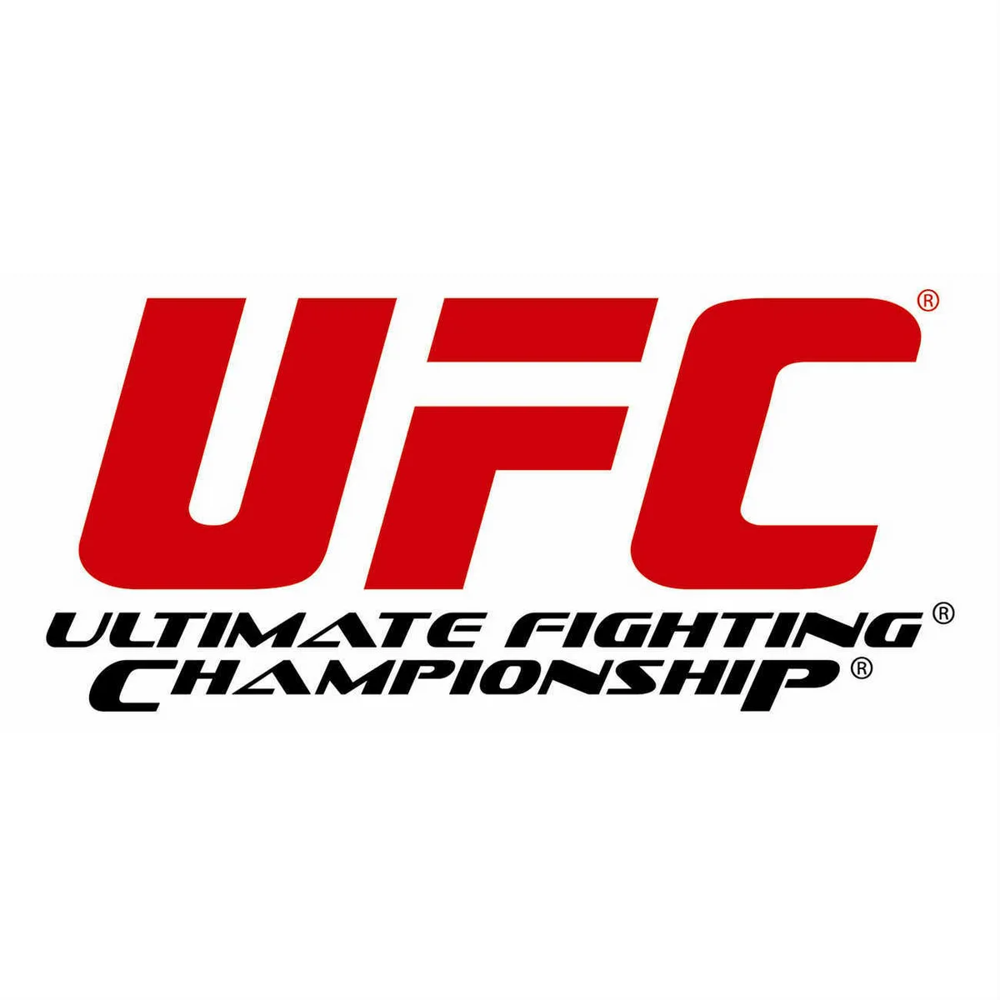

Турниры |
Общая информация |
|

Ultimate Fighting Championship (рус. Абсолютный бойцовский чемпионат) — спортивная организация, базирующаяся в Лас-Вегасе, США, и проводящая бои по смешанным единоборствам (также известные как ММА — от англ. Mixed Martial Arts) по всему миру. Изначально UFC задумывалась создателями как одноразовый турнир, позволяющий определить самое эффективное боевое искусство, и напоминала ранние бразильские состязания по вале-тудо. Успех первого турнира, состоявшегося в Денвере в 1993 году, стал мотивом проведения новых состязаний, однако под давлением властей штата Невада компании пришлось существенно изменить правила, превратив соревнования из зрелища в спорт[1].
В 2001 году, после приобретения компании владельцами сети казино «Station Casinos», Лоренцо и Фрэнком Фертитта и назначения на должность президента организации бывшего промоутера бокса Дэйны Уайта, UFC начала агрессивную экспансию в Соединённые Штаты и другие страны.
Начиная с 2006 года, турниры UFC (вследствие отмены официальных турнирных сеток, ныне известные как события или эвенты от англ. event) составляют значительную конкуренцию профессиональному боксу на платном телевидении: количество заказов платных трансляций нередко превышает миллион. В 2007 году, после выкупа главного конкурента, японской организации Pride Fighting Championships, UFC превратилась в одного из крупнейших в мире промоутеров боёв по смешанным единоборствам[2].
По состоянию на 2012 год под эгидой UFC выступает большинство бойцов ММА, занимающих лидирующие позиции в мировых рейтингах[3], а бои транслируются в 130 странах на 20 разных языках[4].
|